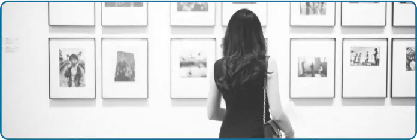
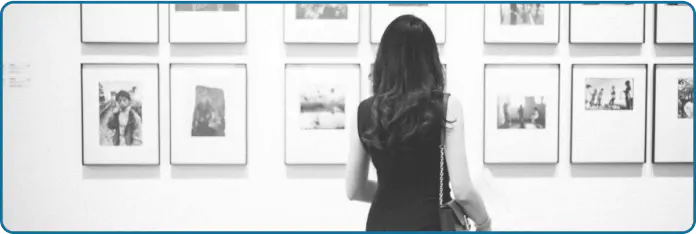
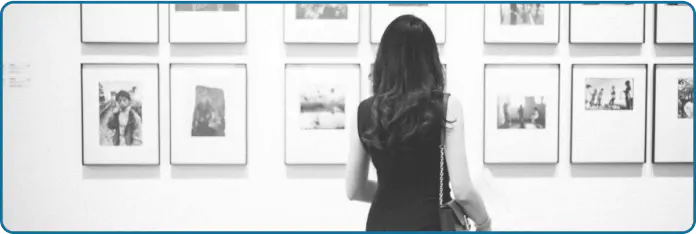
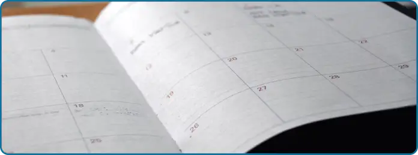

Galerie
Pour découvrir les pilliers du mouvement.
 

Depuis l’omniprésence des réseaux sociaux dans notre société, le féminisme s’est construit une réputation de moins en moins recommandable.
Mais il convient de rappeler que le mouvement ne lutte que pour l’égalité et la création d’un monde plus juste pour toutes et pour tous.
Olympe.com vous invite à enfin redonner une chance au féminisme en découvrant comment, à travers le monde et les époques, les femmes se sont battues pour obtenir leurs droits légitime.

